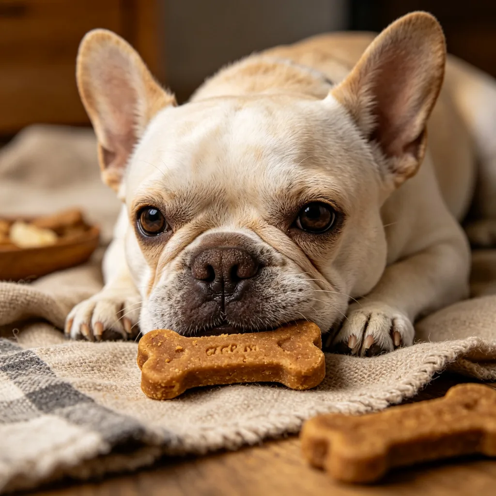
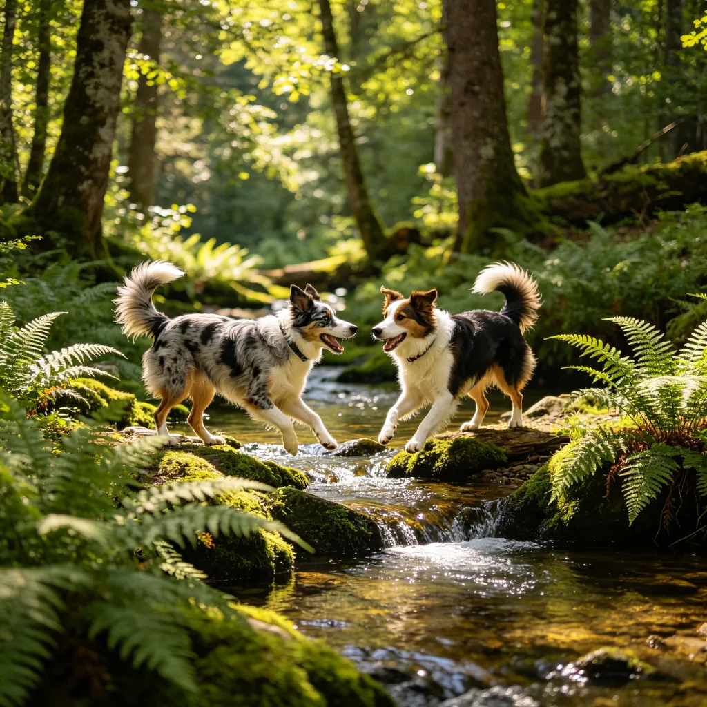

在一個佈置溫馨的飼養籠中，一隻毛髮蓬鬆的天竺鼠正雙手捧著一根小胡蘿蔔，開心地啃食著。牠的小嘴快速地咀嚼，鬍鬚隨著咀嚼動作輕微抖動，眼睛半閉，表情既滿足又幸福。旁邊的食盆裡裝滿了新鮮的牧草和蔬菜，飲水器掛在籠子邊緣。這個畫面，或許就是天竺鼠日常生活的寫照。天竺鼠（也稱為豚鼠、荷蘭豬）是一種非常受歡迎的小型哺乳動物寵物，以其溫順的性格、可愛的外表和相對容易飼養的特點，贏得了很多人的喜愛。
天竺鼠的基本介紹
天竺鼠原產於南美洲安地斯山脈，被人類馴養已有超過3000年的歷史。在南美洲，天竺鼠最初是作為食物和宗教祭祀動物飼養的，後來傳到歐洲，成為了受歡迎的寵物。如今，天竺鼠是全球最受歡迎的小型寵物之一。
天竺鼠是群居動物，在野外生活在由數隻到數十隻組成的群體中。因此，作為寵物，天竺鼠最好成對或成群飼養，單獨飼養的天竺鼠容易感到孤獨和焦慮。天竺鼠的性格溫順、膽小，很少咬人，適合有兒童的家庭飼養。成年天竺鼠的體重大約700-1200克，體長大約20-30公分，壽命通常為5-7年，有些甚至可以活到10年以上。

天竺鼠的飲食需求
天竺鼠的飲食是飼養中最重要的環節之一。天竺鼠是草食性動物，消化系統獨特，需要高纖維的飲食來維持健康。以下是天竺鼠飲食的基本原則：
- 無限量的牧草：牧草應該佔天竺鼠飲食的80%以上。提摩西草（Timothy Hay）是最適合成年天竺鼠的牧草，含有豐富的纖維，有助於維持消化系統健康和牙齒磨損。苜蓿草（Alfalfa Hay）含有較高的鈣和蛋白質，適合幼年、懷孕或哺乳期的天竺鼠，但不適合成年天竺鼠長期食用。
- 新鮮蔬菜：每天提供適量的新鮮蔬菜，如生菜、菠菜、甘藍、青椒、胡蘿蔔、小黃瓜等。蔬菜不僅可以提供維生素和礦物質，還可以增加飲食的多樣性。但要注意不要一次給太多，以免引起腹瀉。
- 維生素C：天竺鼠和人類一樣，無法自行合成維生素C，必須從食物中攝取。缺乏維生素C會導致壞血病，症狀包括牙齦出血、關節腫脹、食慾不振等。可以通過提供富含維生素C的蔬菜（如青椒、甘藍、菠菜）或維生素C補充劑來滿足需求。
- 天竺鼠專用飼料：可以提供適量的天竺鼠專用顆粒飼料作為補充，但不要過量，以免導致肥胖和消化問題。選擇含有維生素C的高品質飼料，並注意保質期。
- 新鮮飲水：隨時提供新鮮、乾淨的飲水。可以使用滾珠飲水器或淺水碗，每天更換飲水，定期清潔飲水器。
需要注意的是，不要給天竺鼠餵食以下食物：巧克力、咖啡、茶、酒精、洋蔥、大蒜、韭菜、鱷梨、生豆類、堅果、種子、穀物、糖類、人類的加工食品等。這些食物可能對天竺鼠的健康有害，甚至致命。

天竺鼠的飼養環境
天竺鼠需要一個寬敞、安全、舒適的飼養環境：
飼養籠：選擇足夠大的飼養籠，底面積至少0.7平方公尺（一隻天竺鼠），每增加一隻增加0.2-0.3平方公尺。籠子的高度至少30公分，確保天竺鼠可以站立。避免使用底部有鐵絲網的籠子，以免傷害天竺鼠的腳底。
墊料：使用柔軟、無塵、吸水性好的墊料，如紙棉、再生紙墊料、羊毛氈等。避免使用松木或雪松木屑，因為其中的芳香油可能刺激天竺鼠的呼吸系統。每天清理糞便和潮濕的墊料，每週更換全部墊料並清潔籠子。
隱藏處：天竺鼠是被捕食者，需要安全的隱藏處來獲得安全感。可以在籠子中放置1-2個隱藏窩，如陶瓷窩、紙板箱、塑膠窩等。
溫度和濕度：天竺鼠適宜的溫度範圍是18-24°C，濕度範圍是40-60%。避免將籠子放在陽光直射、冷氣直吹或潮濕的地方。天竺鼠對高溫很敏感，容易中暑，夏天要注意降溫。
天竺鼠的常見健康問題
1. 維生素C缺乏症（壞血病）：症狀包括牙齦出血、關節腫脹、食慾不振、精神萎靡。預防方法是提供富含維生素C的食物或補充劑。2. 牙齒過長：天竺鼠的牙齒會不斷生長，需要透過咀嚼高纖維食物來磨損。如果牙齒過長，會影響進食，需要由獸醫修剪。3. 皮膚問題：包括真菌感染、蟎蟲感染等，症狀包括脫毛、皮屑、皮膚發紅、瘙癢。4. 呼吸道感染：症狀包括打噴嚏、流鼻涕、呼吸困難。保持飼養環境清潔和通風可以預防。5. 腹瀉：可能由飲食不當、細菌感染、寄生蟲等引起，需要及時就醫。
吃胡蘿蔔的天竺鼠，用牠的滿足和可愛，展示了小型哺乳動物寵物的獨特魅力。天竺鼠或許不是最聰明或最活躍的寵物，但牠們溫順、可愛、容易飼養，是非常好的家庭伴侶動物。只要給予合適的飲食、環境和關愛，一隻健康、快樂的天竺鼠可以陪伴你度過很多美好的時光。或許，下次當你看到一隻捧著胡蘿蔔開心啃食的天竺鼠時，你會理解那種簡單而純粹的快樂。